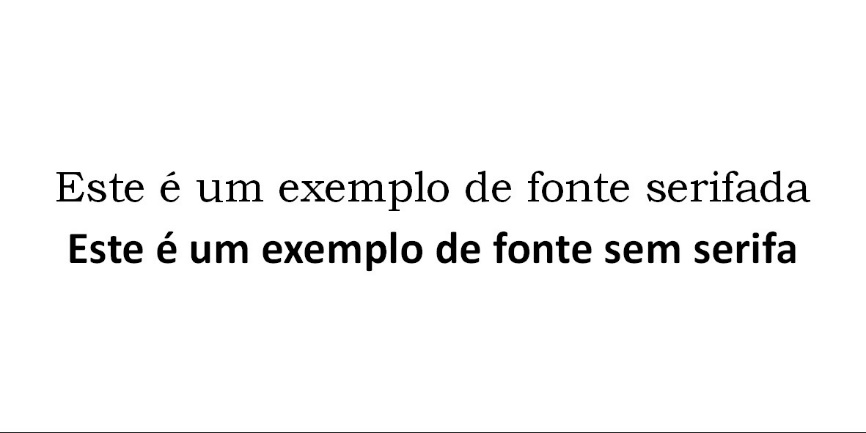
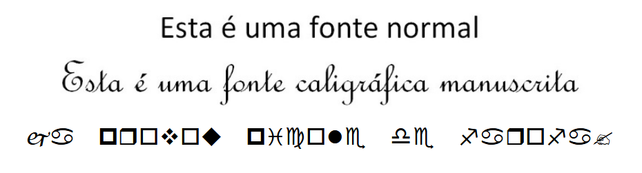

Fontes, ou família de fontes, é um conjunto completo de tipos, ou seja, letras, com um design específico. As famílias de fontes podem ser divididas em categorias por possuírem características em comum, essas características são:
Serifas são os prolongamentos nas pontas das letras, ou no final das hastes das letras, fontes desse tipo são utilizadas na confecção de livros, pois são fontes designadas para uso em parágrafos inteiros. Exemplos de fontes com serifa são Garamond, Times New Roman, Cambria entre outras.
As fontes SansSerif, ou sem serifa, são fontes sem prolongamentos nas pontas e costumam ser utilizadas em títulos e textos publicitários. Exemplos de fontes sem serifa são Helvetica, Calibri e Arial.
Fontes caligráficas tendem a imitar a escrita à mão livre e costumam ser utilizadas em artes ilustrativas mais informais. As fontes caligráficas podem ainda dividir-se em cursivas ou manuscritas e de imprensa, as letras manuscritas são feitas sem tirar a caneta do papel desde o início até o fim da palavra, enquanto as letras de imprensa, chamadas ainda de letra-bastão, são feitas separadas umas das outras, o mesmo pode aplicar-se às famílias de fontes.
Fontes decorativas, ao contrário de outras categorias, não possuem letras, ou possuem poucas letras e são em sua maioria formadas por glifos e formas geométricas, chamadas de dings, ou dingbats. São utilizadas para inserir caracteres decorativos na arte. Exemplos de fontes decorativas são Webdings e Wingdings. No entanto, toda família de fonte já vem com um conjunto de caracteres especiais, para vê-los, bem como conhecer seus códigos ANSII, podemos abrir um programa que vem com o Windows, chamado de Mapa de Caracteres, esse programa costuma ficar na pasta de Acessórios do Menu Iniciar.
